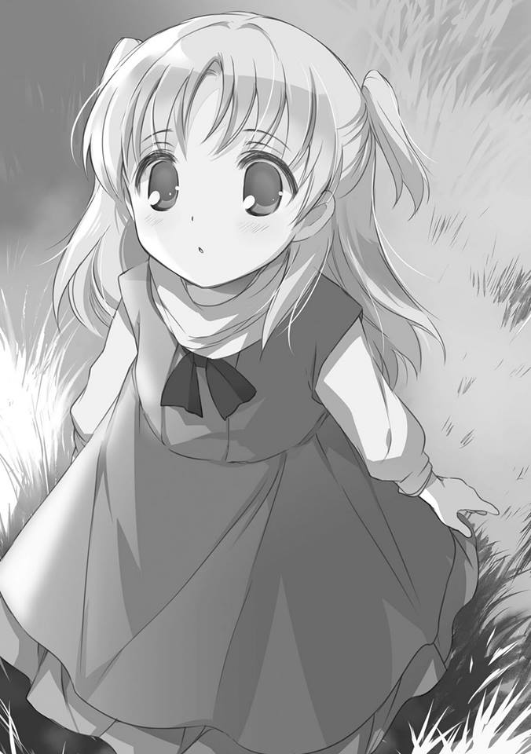
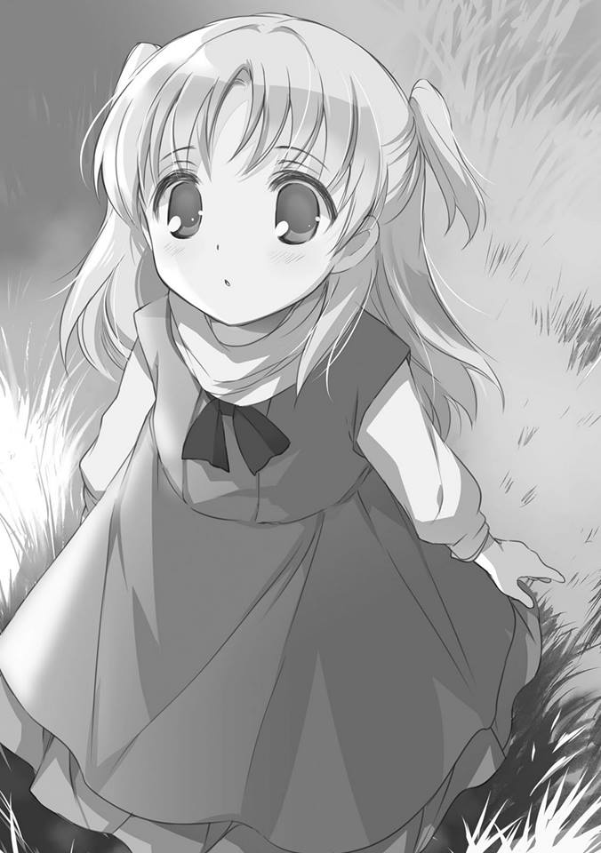

こんなにも、たくさんの幸せをあの人に分けてもらった
だから、きっと
今の、私は
誰が何と言おうと
世界一、 幸せな女の子だ
だから、きっと
今の、私は
誰が何と言おうと
世界一、 幸せな女の子だ
———クトリ・ノタ・セニオリス
角色简介
珂朵莉·诺塔·瑟尼欧里斯（クトリ・ノタ・セニオリス（Chtholly Nota
Seniorious））是由枯野瑛创作的轻小说《末日时在做什么？有没有空？可以来拯救吗？》及其衍生作品的登场角色
奥尔兰多商会第四仓库中的年轻妖精兵少女，身为妖精仓库中年龄最大的黄金妖精，扮演着未成体妖精兵前辈的角色，最强圣剑之一「瑟尼欧里斯（セニオリス）」的适合者，在第28号浮游岛上意外摔倒而与威廉相遇，并受到他的帮助。
角色经历
在太阳西斜的这个世界，置身天上之森。等这场战争结束后，不归之人与望眼欲穿的众人，人人本着正义之名，长存不灭的过去、逐渐消逝的未来。我回来了，纵使日薄西山，即使看不见未来，此时此刻的光辉，盼君勿忘。
———世界上最幸福的女孩
——“假如……我是说假如喔。万一我再过五天就会死，你能不能对我温柔一点？”——
诞生
珂朵莉于浮空历422年一月出生在94号浮空岛，因为哭声而被两名年长的妖精发现。在安抚她过后，金发碧眼的妖精前辈欢迎她来到了这个毫无希望的世界。
成为妖精兵
长大后，珂朵莉有一位仰慕的前辈。命运使然，前辈死后，珂朵莉被选为了遗迹兵器瑟尼欧里斯的使用者，并成为了妖精兵。
与威廉的羁绊
初次外出时，她打扮朴素，身穿灰色兜帽与同色大衣，与威廉·克梅修相遇于28号浮空岛的集合市场街（Market medley）。
出场时，珂朵莉在市街高处追逐着口衔胸针的黑猫，因失去平衡从天而降并与威廉相遇。 因兜帽丢失，威廉便送了她一顶新的帽子，然后一同前往此岛最高的高塔上俯瞰城市风光。临走时她要求威廉把她忘掉。
在68号浮空岛的仓库外围，她与此时已经成为她的管理员的威廉再次相遇。在几天的日常中，两人情窦初开。 一次战斗结束后对威廉说：“假如……我是说假如喔。万一我再过五天就会死，你能不能对我温柔一点？”并要求接吻。 之后威廉得知了事件的原因并开始传授珂朵莉圣剑/遗迹兵器（Dagr weapon）的正确使用方法，希望她能平安归来。珂朵莉也将胸针的由来回忆而出。
出场时，珂朵莉在市街高处追逐着口衔胸针的黑猫，因失去平衡从天而降并与威廉相遇。 因兜帽丢失，威廉便送了她一顶新的帽子，然后一同前往此岛最高的高塔上俯瞰城市风光。临走时她要求威廉把她忘掉。
在68号浮空岛的仓库外围，她与此时已经成为她的管理员的威廉再次相遇。在几天的日常中，两人情窦初开。 一次战斗结束后对威廉说：“假如……我是说假如喔。万一我再过五天就会死，你能不能对我温柔一点？”并要求接吻。 之后威廉得知了事件的原因并开始传授珂朵莉圣剑/遗迹兵器（Dagr weapon）的正确使用方法，希望她能平安归来。珂朵莉也将胸针的由来回忆而出。
人格侵蚀
珂朵莉与艾瑟雅和奈芙莲一同前去15号浮空岛清除第六兽，因为出乎意料的原因战败而归：由于大量使用魔力的缘故，珂朵莉开始被前世侵蚀。起初，她会在梦境中看到一名红发的女孩，名叫艾陆可·霍克斯登。后来，在侵蚀的过程中珂朵莉表现出陷入昏迷。一次梦境中，珂朵莉与艾陆可进行交涉后，艾陆可同意让她回到现实中。她以此实现了和威廉的承诺。
苏醒后，珂朵莉的发梢开始变红，她的身体状况也发生了改变，纯化银对她的血液不再有特殊反应，对此妮戈兰·阿斯塔图斯判断珂朵莉或许已经不再是黄金妖精。然而她的侵蚀并未好转，随着时间的推移，越来越多的记忆从她的脑海中消失了。在救援任务的时候，珂朵莉已经忘记了包括可蓉·琳·布尔加特里欧在内的，仓库绝大多数的妖精。
苏醒后，珂朵莉的发梢开始变红，她的身体状况也发生了改变，纯化银对她的血液不再有特殊反应，对此妮戈兰·阿斯塔图斯判断珂朵莉或许已经不再是黄金妖精。然而她的侵蚀并未好转，随着时间的推移，越来越多的记忆从她的脑海中消失了。在救援任务的时候，珂朵莉已经忘记了包括可蓉·琳·布尔加特里欧在内的，仓库绝大多数的妖精。
离世
在救援任务期间，珂朵莉的状态仍在恶化。与此同时她和威廉的感情却在不断升温，威廉甚至对她进行了一次求婚。
次日，当她与威廉和葛力克·葛雷克拉可一同进行地面调查时，珂朵莉又一次听到了艾陆可的呼唤。她失去了表层意识，在恍惚中带着威廉和葛力克来到了艾陆可冰封的尸体前。在那里，她的侵蚀状况又一次加深，头发几乎全部变为红色，而人格则接近于崩溃。
从地下脱身后，威廉设法带她去浮空艇的一个房间休息。此时，珂朵莉已陷入昏迷。当第六兽开始袭击搜救队时，珂朵莉在脑海中和艾陆可再次相会。艾陆可向她展示了包括她的过去以及黄金妖精的本质在内的真相——黄金妖精是由不理解死亡含义的星神艾陆可的灵魂碎片所诞生出的种族。
当战况开始逐渐恶化时，珂朵莉在梦境中以另一个视角观察着现实。当看到威廉受到重创的身体时，珂朵莉向艾陆可请求让自己回到现实。艾陆可则以珂朵莉所剩时间不多为由拒绝了这个请求，但是珂朵莉仍旧坚持自己的看法。她要履行自己和威廉的诺言。
经过珂朵莉的一番安抚，艾陆可勉强同意珂朵莉回到现实，珂朵莉起身朝负伤的诺夫特·K·迪斯佩拉提奥的方向走去。当威廉为了救奈芙莲·卢可·印萨尼亚而跳下浮空艇时，珂朵莉拿起诺夫特的遗迹兵器迪斯佩拉提奥。
次日，当她与威廉和葛力克·葛雷克拉可一同进行地面调查时，珂朵莉又一次听到了艾陆可的呼唤。她失去了表层意识，在恍惚中带着威廉和葛力克来到了艾陆可冰封的尸体前。在那里，她的侵蚀状况又一次加深，头发几乎全部变为红色，而人格则接近于崩溃。
从地下脱身后，威廉设法带她去浮空艇的一个房间休息。此时，珂朵莉已陷入昏迷。当第六兽开始袭击搜救队时，珂朵莉在脑海中和艾陆可再次相会。艾陆可向她展示了包括她的过去以及黄金妖精的本质在内的真相——黄金妖精是由不理解死亡含义的星神艾陆可的灵魂碎片所诞生出的种族。
当战况开始逐渐恶化时，珂朵莉在梦境中以另一个视角观察着现实。当看到威廉受到重创的身体时，珂朵莉向艾陆可请求让自己回到现实。艾陆可则以珂朵莉所剩时间不多为由拒绝了这个请求，但是珂朵莉仍旧坚持自己的看法。她要履行自己和威廉的诺言。
经过珂朵莉的一番安抚，艾陆可勉强同意珂朵莉回到现实，珂朵莉起身朝负伤的诺夫特·K·迪斯佩拉提奥的方向走去。当威廉为了救奈芙莲·卢可·印萨尼亚而跳下浮空艇时，珂朵莉拿起诺夫特的遗迹兵器迪斯佩拉提奥。
“既然你可以得到幸福，就要让自己幸福。否则，我们几个，没办法接受。”
面对诺夫特的请求，珂朵莉回答道：
“对不起。我已经绝对无法获得幸福了，因为我发现，我早就被幸福所包围了。”
珂朵莉随后跳下了浮空艇。在解决了奈芙莲魔力暴走的危险后，她用自身剩余的所有魔力击杀了七百一十五只第六兽，拯救了威廉和奈芙莲。临死前，珂朵莉最后一次来到奈芙莲和威廉的面前。对着遍体鳞伤、奄奄一息的威廉，少女设法用唇形如此表达：
“威廉，谢谢你。”
战斗后
战斗后，珂朵莉的遗体被护翼军所回收。尽管身殒，但她的行为却给周遭的人留下了极大的影响。她的最后一次战斗使得绝大多数的第六兽被歼灭，保证了浮空岛几十年内不会再被第六兽所侵袭。五年后，她仍旧被新一任的妖精兵所铭记。
五年后，珂朵莉被暗示转世为了一只出生在38号浮空岛、名叫莉艾尔的黄金妖精的身上。 
五年后，珂朵莉被暗示转世为了一只出生在38号浮空岛、名叫莉艾尔的黄金妖精的身上。 
本文引自中国珂学院(https://wiki.sukasuka.cn/)。
珂教兴国
动画播出以后，珂朵莉在中国的人气急升，不少粉丝以珂学家、珂教、珂学院院士自称，积极提倡珂教兴国。
珂学家人均程序员，技术文明先进。有珂学家自建起了中珂院图库、中珂院维基等同人网站。
珂朵莉还拥有以自己名字命名的算法“珂朵莉树”（Chtholly Tree）
拥有以后辈的剑Ignareo命名的分布式http超高并发框架。
珂朵莉正在把她的IOI金牌分块，请你来帮助她！
珂学家人均程序员，技术文明先进。有珂学家自建起了中珂院图库、中珂院维基等同人网站。
珂朵莉还拥有以自己名字命名的算法“珂朵莉树”（Chtholly Tree）
拥有以后辈的剑Ignareo命名的分布式http超高并发框架。
珂朵莉正在把她的IOI金牌分块，请你来帮助她！
本文引自萌娘百科(https://zh.moegirl.org.cn)，文字内容默认使用《知识共享 署名-非商业性使用-相同方式共享 3.0 中国大陆》协议。
而今，即便距离末日三问动画问世已经过去了8年，仍有无数的人们因为机遇而成为珂学家。
他们将在珂学家的道路上越走越远，熠熠生辉，闪烁如星芒一般。
末日三问或许不是最知名的番剧，但一定是角色厨转换率最多的番剧。
而我，荧火light，至始至终都是珂学家，这份心意，从未改变。
他们将在珂学家的道路上越走越远，熠熠生辉，闪烁如星芒一般。
末日三问或许不是最知名的番剧，但一定是角色厨转换率最多的番剧。
而我，荧火light，至始至终都是珂学家，这份心意，从未改变。
无论怎么说，珂朵莉一定是世界上最幸福的女孩！！！
萌战战绩
2017年世萌
春季番表演赛冠军
春季番表演赛冠军
2018年世萌
紫水晶项链获得者
紫水晶项链获得者
| 活动名 | 主办方 | 届次 | 年度 | 名次 |
|---|---|---|---|---|
| bilibili moe动画角色人气大赏 | bilibili | 第三届 | 2017女子组 | 三十二强 |
| 国际最萌大会（世萌） | Minhtam | 第十届 | 2017春季番表演赛 | 冠军 |
| 国际最萌大会（世萌） | Minhtam | 第十届 | 2017年度新番表演赛 | 冠军 |
| 国际最萌大会（世萌） | Minhtam | 第十一届 | 2018项链赛 | 紫水晶项链 |
| 国际最萌大会（世萌） | Minhtam | 第十一届 | 2018季后赛总排名 | 第四名 |
| 国际最萌大会（世萌） | Minhtam | 第十一届 | 2019季后赛总排名 | 第十名 |
| bilibili2020年度动画大选 | bilibili | 2020往年动画角色 | 第三名 |
珂朵莉集